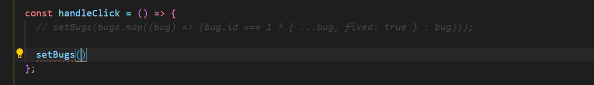

HOME
Simplifying Update Logic with Immer
You have seen that without mutation, logic can get messy, and complex.
In this lesson we are going to use the
Immer
library to make our logic simpler.
Install immer
If you get an err talking about
'Outdated Optimize Dep', go ahead and install
@latest.
But the version I used is 9.0.19
Example
We are using the same example from
the last lesson.
Import produce from immer
Next, we need to immort the produce func from immer...
using produce
We want to achieve the same result as last time.
When we click the button we want fixed to be true.
So we still use setBugs...

But instead of mapping the array, we call the produce function...
The param of produce needs to be an arrow func, and by convention it
should be named 'draft'...
What is draft
Draft is a proxy object that records changes we are going to apply to
the bugs array.
So imagine draft is a copy of the bugs array, so we are free to mutate
or modify it just like a regular JS obj.
So we dont need to map anything, we dont need to make copys...
You can go into the body of the draft and make any changes.
Behind the scenes immer keeps track of the changes, then it will
create a copy of the bugs array with our changes applied to the copy.
How draft works
So we wanted to get the bug with id of 1 and change fixed to true...
Imagine draft is the array of bugs...
We need to store the result...
If the bug gets found, set bug.fixed to true...
return
Finally lets see the result by making this markup...
We map the array of bugs, then take each bug and render a p element...
entire app code